第4世代（シンオウ地方）ポケモンの英語名一覧
全107匹の英語名と由来
第4世代（シンオウ地方）のポケモン107匹の英語名を、図鑑番号順にまとめました。名前を押すと、英語版図鑑の説明文と日本語訳、英語名の由来が見られます。
| No. | 日本語名 | 英語名 | 英語名の由来 |
|---|---|---|---|
| 387 | Turtwig | turtle（カメ）とtwig（小枝） | |
| 388 | 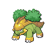 ハヤシガメ | Grotle | grove（木立）、grow（育つ）とturtle（カメ） |
| 389 | Torterra | tortoise（リクガメ）とterra（ラテン語で「大地」） | |
| 390 | Chimchar | chimp（チンパンジー）とchar（焦がす） | |
| 391 | Monferno | monkey（サル）とinferno（地獄の業火） | |
| 392 | Infernape | inferno（地獄の業火）とape（類人猿） | |
| 393 | 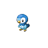 ポッチャマ | Piplup | plop（ぽちゃん）がもとになっていると考えられている |
| 394 | Prinplup | prince（王子）がもとになっていると考えられている | |
| 395 | 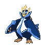 エンペルト | Empoleon | emperor penguin（コウテイペンギン）、polar（極地の）、South Pole（南極）とNapoleon… |
| 396 | Starly | starling（ムクドリ）がもとになっていると考えられている | |
| 397 | 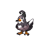 ムクバード | Staravia | starling（ムクドリ）とavian（鳥の） |
| 398 | 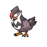 ムクホーク | Staraptor | starling（ムクドリ）とbird of prey（猛禽） |
| 399 | 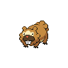 ビッパ | Bidoof | beaver（ビーバー）とdoofus（まぬけ） |
| 400 | 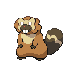 ビーダル | Bibarel | beaver（ビーバー）、Biber（ドイツ語で「ビーバー」）とbarrel（たる） |
| 401 | Kricketot | cricket（コオロギ）、tot（ちびっ子）とtotter（よろよろ歩く） | |
| 402 | Kricketune | cricket（コオロギ）とtune（曲） | |
| 403 | 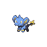 コリンク | Shinx | shining（輝く）、shock（衝撃）、sphinx（スフィンクス）とlynx（オオヤマネコ） |
| 404 | Luxio | lux（ラテン語で「光」）とleo（ラテン語で「ライオン」） | |
| 405 | 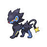 レントラー | Luxray | lux（ラテン語で「光」）とX-ray（レントゲン） |
| 406 | 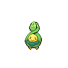 スボミー | Budew | bud（つぼみ）とdew（露） |
| 407 | 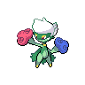 ロズレイド | Roserade | rose（バラ）とmasquerade（仮面舞踏会） |
| 408 | Cranidos | cranium（頭蓋骨）とdinosaur（恐竜） | |
| 409 | Rampardos | rampart（城壁）、ram（オスの羊、体当たり）、rampage（暴れ回る）とhard（硬い） | |
| 410 | 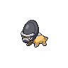 タテトプス | Shieldon | shield（盾）と-don（「〜の歯」を表す語尾） |
| 411 | Bastiodon | bastion（とりで）と-don（「〜の歯」を表す語尾） | |
| 412 | 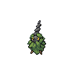 ミノムッチ | Burmy | burnous（フードつきマント）、worm（虫）と-y（小さいもの・かわいいものを表す語尾） |
| 413 | 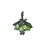 ミノマダム | Wormadam | bagworm（ミノムシ）とmadam（奥様） |
| 414 | Mothim | moth（ガ）とhim（彼） | |
| 415 | 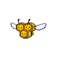 ミツハニー | Combee | honeycomb（ハチの巣）、combination（組み合わせ）とbee（ハチ） |
| 416 | 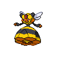 ビークイン | Vespiquen | vespa（イタリア語で「スズメバチ」）とqueen（女王） |
| 417 | Pachirisu | ||
| 418 | 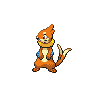 ブイゼル | Buizel | フランス語の名前は「Mustébouée」で、mustelidae（イタチ科）、bouée（ブイ）から作られている |
| 419 | Floatzel | フランス語の名前は「Mustéflott」で、mustelidae（イタチ科）、flotter（浮かぶ）から作られている | |
| 420 | 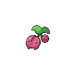 チェリンボ | Cherubi | cherry（さくらんぼ）、cherubic（天使のような）とruby（ルビー） |
| 421 | Cherrim | cherry（さくらんぼ）、cherubim（天使ケルビム）とblossom（花） | |
| 422 | 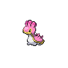 カラナクシ | Shellos | shell（殻）、loss（喪失）、lost（迷った）と-los（ドイツ語で「〜がない」を表す語尾） |
| 423 | 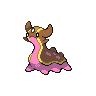 トリトドン | Gastrodon | gastropoda（腹足類）、Gastropteron（ウミウシの一種の学名）、don（首領）と-don（「〜の歯」を… |
| 424 | 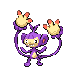 エテボース | Ambipom | ambi-（「両方の」を表す接頭語）、ambidextrous（両手利きの）、Aipom（エイパム）とpalm（ヤシ） |
| 425 | 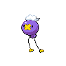 フワンテ | Drifloon | drift（ただよう）とballoon（風船） |
| 426 | 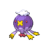 フワライド | Drifblim | drift（ただよう）とblimp（飛行船） |
| 427 | 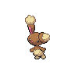 ミミロル | Buneary | bunny（うさちゃん）とear（耳） |
| 428 | Lopunny | lop（たれ耳）とbunny（うさちゃん） | |
| 429 | Mismagius | mischievous（いたずら好きの）、Misdreavus（ムウマ）、Mage（魔術師）とmagic（魔法） | |
| 430 | 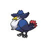 ドンカラス | Honchkrow | honcho（リーダー）とcrow（カラス） |
| 431 | 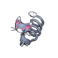 ニャルマー | Glameow | glamour（魅力）とmeow（ニャー） |
| 432 | 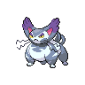 ブニャット | Purugly | purr（ゴロゴロ（猫ののど））とugly（みにくい） |
| 433 | Chingling | chime（チャイム）、jingling（チリンチリン）と-ling（「小さい〜」を表す語尾） | |
| 434 | Stunky | skunk（スカンク）、stunk（悪臭がした）とstinky（くさい） | |
| 435 | Skuntank | skunk（スカンク）、stank（悪臭がした）とtank（戦車） | |
| 436 | 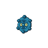 ドーミラー | Bronzor | bronze（青銅）とmirror（鏡） |
| 437 | 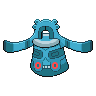 ドータクン | Bronzong | bronze（青銅）、gong（どら）、dong（ゴーン（鐘の音））とbianzhong（編鐘（中国の古代の楽器）） |
| 438 | Bonsly | bonsai（盆栽）、sly（ずるい）とlie（うそ） | |
| 439 | Mime Jr. | mime（パントマイム）とJr.（「〜ジュニア」） | |
| 440 | Happiny | happiness（幸せ）、tiny（ちっちゃい）とteeny（ちっちゃい） | |
| 441 | 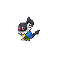 ペラップ | Chatot | chat（フランス語で「猫」）とparrot（オウム） |
| 442 | Spiritomb | spirit（精霊）とtomb（墓） | |
| 443 | Gible | gobble（がつがつ食べる）とnibble（少しずつかじる） | |
| 444 | 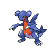 ガバイト | Gabite | bite（かみつく）がもとになっていると考えられている |
| 445 | Garchomp | chomp（むしゃむしゃ食べる）とgargantuan（巨大な） | |
| 446 | Munchlax | munch（むしゃむしゃ食べる）、lax（ゆるい）、relax（くつろぐ）とSnorlax（カビゴン） | |
| 447 | Riolu | ||
| 448 | Lucario | oracle（神託）がもとになっていると考えられている | |
| 449 | 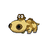 ヒポポタス | Hippopotas | hippopotamus（カバ）がもとになっていると考えられている |
| 450 | Hippowdon | hippopotamus（カバ）、power（力）、powder（粉）とpow（バン！） | |
| 451 | Skorupi | フランス語の名前は「Rapion」で、scorpion（サソリ）から作られている | |
| 452 | 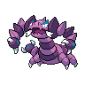 ドラピオン | Drapion | dragon（ドラゴン）、drastic（思い切った）、Dracula（ドラキュラ）とscorpion（サソリ） |
| 453 | Croagunk | croak（ケロケロ鳴く）とgunk（べとべと） | |
| 454 | Toxicroak | toxic（有毒な）とcroak（ケロケロ鳴く） | |
| 455 | 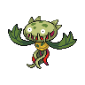 マスキッパ | Carnivine | carnivore（肉食動物）とvine（つる） |
| 456 | Finneon | fin（ひれ）とneon（ネオン） | |
| 457 | 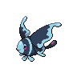 ネオラント | Lumineon | luminous（光る）とneon（ネオン） |
| 458 | Mantyke | manta ray（マンタ）とtyke（ちびっ子） | |
| 459 | 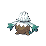 ユキカブリ | Snover | snow（雪）とcover（おおい） |
| 460 | 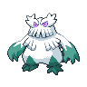 ユキノオー | Abomasnow | Abominable Snowman（雪男）がもとになっていると考えられている |
| 461 | 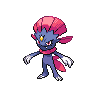 マニューラ | Weavile | weave（編む）、evil（悪）とvile（卑劣な） |
| 462 | 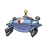 ジバコイル | Magnezone | magnetic zone（磁場）とMagneton（レアコイル） |
| 463 | 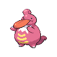 ベロベルト | Lickilicky | lick（「なめる」の繰り返し）とlicky（なめる） |
| 464 | 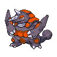 ドサイドン | Rhyperior | rhinoceros（サイ）、rhyolite（流紋岩）、hyperion（ギリシャ神話の太陽神ヒュペリオン）とsupe… |
| 465 | Tangrowth | tangle（からまる）とgrowth（成長） | |
| 466 | Electivire | electric（電気の）、electricity（電気）、wire（電線）とlive wire（電気の通った電線） | |
| 467 | 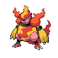 ブーバーン | Magmortar | magma（マグマ）とmortar（迫撃砲、すり鉢） |
| 468 | Togekiss | kiss（キス）がもとになっていると考えられている | |
| 469 | Yanmega | mega-（「巨大な」を表す接頭語）とMeganeura（古代の巨大トンボのメガネウラ） | |
| 470 | Leafeon | leaf（葉）とeon（ブイズの名前に共通する語尾） | |
| 471 | Glaceon | glacier（氷河）、glace（フランス語で「氷」）とeon（ブイズの名前に共通する語尾） | |
| 472 | Gliscor | フランス語の名前は「Scorvol」で、scorpion（サソリ）、vol（飛行）から作られている | |
| 473 | Mamoswine | mammoth（マンモス）とswine（ブタ） | |
| 474 | 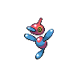 ポリゴンＺ | Porygon-Z | Porygon（ポリゴン）とletter Z（アルファベットのZ） |
| 475 | Gallade | gallant（勇ましい）とblade（刃） | |
| 476 | 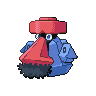 ダイノーズ | Probopass | probe（探る）、proboscis（長い鼻）とcompass（方位磁針） |
| 477 | Dusknoir | dusk（夕暮れ）とnoir（フランス語で「黒」） | |
| 478 | 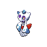 ユキメノコ | Froslass | frost（霜）とlass（少女） |
| 479 | 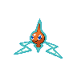 ロトム | Rotom | フランス語の名前は「Motisma」で、moteur（エンジン）、Plasma（物理学）から作られている |
| 480 | 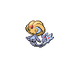 ユクシー | Uxie | UMA（未確認生物）とpixie（妖精ピクシー） |
| 481 | Mesprit | UMA（未確認生物）、spirit（精霊）とSprite（妖精） | |
| 482 | Azelf | UMA（未確認生物）とelf（妖精エルフ） | |
| 483 | 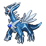 ディアルガ | Dialga | diamond（ダイヤモンド）がもとになっていると考えられている |
| 484 | Palkia | galaxia（スペイン語で「銀河」）がもとになっていると考えられている | |
| 485 | 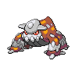 ヒードラン | Heatran | heat transfer（熱伝導）がもとになっていると考えられている |
| 486 | Regigigas | regis（ラテン語で「王の」）とgigas（ギリシャ語で「巨人」） | |
| 487 | 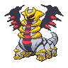 ギラティナ | Giratina | platina（プラチナ）がもとになっていると考えられている |
| 488 | クレセリア | Cresselia | crescent（三日月）とSelene（ギリシャ神話の月の女神セレネ） |
| 489 | フィオネ | Phione | Manaphy（マナフィ）とClione（クリオネ） |
| 490 | マナフィ | Manaphy | mana（マナ（神秘的な力））とfay（妖精） |
| 491 | Darkrai | dark（暗い）がもとになっていると考えられている | |
| 492 | シェイミ | Shaymin | |
| 493 | アルセウス | Arceus | ἀρχή arkhḗ（ギリシャ語で「始まり」）がもとになっていると考えられている |